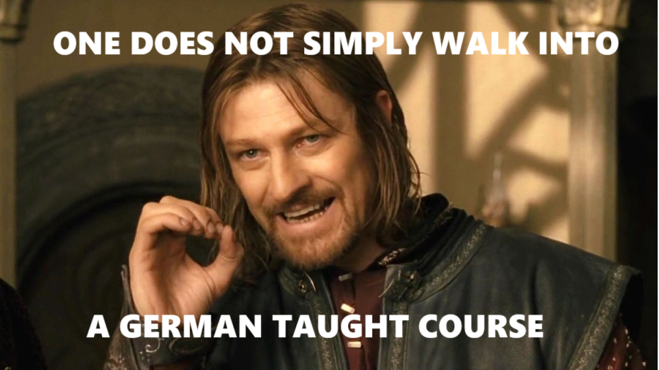

I am a researcher at Chemnitz Unitversity of Technology who's crazy about programming and robotics. After coming to Germany in 2018 from India to pursue my masters in mechanical engineering at Chemnitz University of Technology, I found my home in Germany. My arrogance about having cleared the hearing section of German C2 without ever setting foot in Germany died swiftly upon attending my first German lecture (why didn't anybody tell me German!=German). The rest of my masters felt like learning to swim in the ocean — but hey, I managed! Now I can comfortably follow a rapid-fire speech from Heidi Reichinnek without missing a beat.
During my master's, I somehow landed a HiWi job at the Chair of Handling and Assembly Technology, where my amazing supervisor opened my eyes to robotics, programming, game development, microcontrollers—you name it! Just as I was getting into the groove, COVID hit, and suddenly everything went online. Now, imagine teaching practical, hands-on topics that require you to use a compass, set square, rulers and at least three arms, remotely? Out of sheer necessity (and perhaps boredom), I dove into creating keyframe animations for video lectures using Blender. While the animations weren't exactly Pixar-level (check them out here), they got the job done.
At my subsequent internship at Robert Bosch Power Tools GmbH in Sebnitz I was introduced to Robot Operating System (ROS). I had a lot of fun programming the self-built 3D-printed SCARA robot using python and ROS, controlling the step motors with an arduino. Just before leaving for this internship, my supervisor offered me (or rather baited me with) a really tempting topic for my master thesis - the design, development and implementation of a force feedback glove for virtual reality. I modelled the glove in Creo, 3D-printed countless parts, wired up sensors to follow my finger and hand movement and hooked up servo motors to offer resistance to finger motion. The most satisfying part was programming the whole system in Unity using C#, enabling the glove to detect virtual collisions and simulate the sensation of gripping virtual objects by sending data to a microcontroller.
I started working as a reseacher at the same department after completing the masters. The transition to this job felt a tad underwhelming: same desk, same chair, same computer and very similar tasks (my account balance at the end of the month lightened up my mood though). During this period, I worked on several projects, mostly focussing on robotics. I brushed up my knowledge of ROS and made use of the UR5 robot we had and implemented a hand movement based telemanipulation using a leap motion depth camera. The camera captured the handposition in realtime and converted that into target pose of the robot. The robot was then manipulated using a very complex formula (velocity=distance/time). Subsequent projects included telemanipulating the robot using a VR headset and using LLM to control the robot. The latter involved using the ROSA package, originally developed by NASA to control their mars rover, to control the UR5 robot. After optimizing the prompts and developing custom LangChain tools, I managed to teach the robot to understand commands like, "Hey, pick up that banana and move it 5 cm to the left!". A task that required a human about 2s was now automated to be accomplished in about a minute and using million GPU cycles. Another fun highlight was connecting a previously neglected assembly cell’s PLC to Unity, creating a real-time "software-in-the-loop" setup. This allowed me to remotely control the assembly cell with hand gestures, visualize its movements live in a VR headset.
After living for 7 years in Chemnitz (and the extreme delays due to beaurocracy in getting project approvals) I have decided to tread on a new path where I could use all the programming skills I honed in the past few years. Practicing my knowledge on LeetCode has been helping me strengthen my fountain of my self-taught programming knowledge. If you are looking to hire software engineers and came across my profile, and read this long story to the end, maybe your team and I are a good match! Feel free to contact me at asdf@cakh.dev. Cheerio!
A natural language controlled robotic system leveraging ROS2, UR5e robot, and OpenAI's GPT models.
A robotic system that manipulates objects based on visual feedback from a MechMind camera.
Email: your.email@example.com